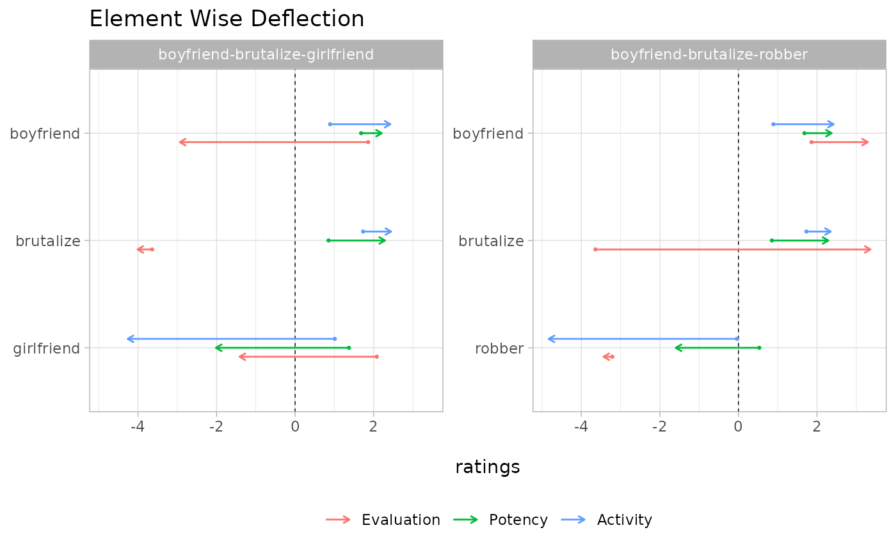

You can get_element_wise_deflection() from an “event
deflection object”.
act <- interact(
dictionary = c("usfullsurveyor2015", "all"),
equations = c("us2010", "all")
)
events <- bind_rows(
c(A = "boyfriend", B = "brutalize", O = "robber"),
c(A = "boyfriend", B = "brutalize", O = "girlfriend")
)
d <- act$deflection(events)
get_element_wise_deflection(d)
#> # A tibble: 2 × 9
#> Ae Ap Aa Be Bp Ba Oe Op Oa
#> <dbl> <dbl> <dbl> <dbl> <dbl> <dbl> <dbl> <dbl> <dbl>
#> 1 2.06 0.482 2.36 49.0 2.07 0.386 0.0512 4.53 23.0
#> 2 23.0 0.277 2.36 0.139 2.07 0.512 12.2 11.5 27.8Each piece of deflection is just the squared difference between “fundamentals” and “transients.” Thus, we can imagine various ways of visualizing what is going on.
The get_long_form() functions is useful for making
graphs like the following one:
df <- get_long_form(d)
df
#> # A tibble: 18 × 9
#> A B O id dim fundamentals transients deflections entity
#> <chr> <chr> <chr> <chr> <chr> <dbl> <dbl> <dbl> <chr>
#> 1 boyfriend bruta… robb… A e 1.86 3.29 2.06 boyfr…
#> 2 boyfriend bruta… robb… A p 1.68 2.37 0.482 boyfr…
#> 3 boyfriend bruta… robb… A a 0.89 2.43 2.36 boyfr…
#> 4 boyfriend bruta… robb… B e -3.64 3.36 49.0 bruta…
#> 5 boyfriend bruta… robb… B p 0.85 2.29 2.07 bruta…
#> 6 boyfriend bruta… robb… B a 1.73 2.35 0.386 bruta…
#> 7 boyfriend bruta… robb… O e -3.21 -3.44 0.0512 robber
#> 8 boyfriend bruta… robb… O p 0.53 -1.60 4.53 robber
#> 9 boyfriend bruta… robb… O a -0.04 -4.83 23.0 robber
#> 10 boyfriend bruta… girl… A e 1.86 -2.93 23.0 boyfr…
#> 11 boyfriend bruta… girl… A p 1.68 2.21 0.277 boyfr…
#> 12 boyfriend bruta… girl… A a 0.89 2.43 2.36 boyfr…
#> 13 boyfriend bruta… girl… B e -3.64 -4.01 0.139 bruta…
#> 14 boyfriend bruta… girl… B p 0.85 2.29 2.07 bruta…
#> 15 boyfriend bruta… girl… B a 1.73 2.45 0.512 bruta…
#> 16 boyfriend bruta… girl… O e 2.08 -1.41 12.2 girlf…
#> 17 boyfriend bruta… girl… O p 1.37 -2.02 11.5 girlf…
#> 18 boyfriend bruta… girl… O a 1.01 -4.26 27.8 girlf…
df |>
mutate(entity = fct_rev(entity)) |>
mutate(event = paste(A, B, O, sep = "-")) |>
mutate(dim = case_when(
dim == "e" ~ "Evaluation",
dim == "p" ~ "Potency",
dim == "a" ~ "Activity"
)) |>
mutate(dim = fct_relevel(dim, c("Evaluation", "Potency", "Activity"))) |>
ggplot(aes(x = fundamentals, xend = transients, y = entity, color = dim)) +
geom_vline(xintercept = 0, linetype = "dashed", linewidth = 1/4) +
geom_point(size = 1/2, show.legend = FALSE, position = position_dodge(1/4)) +
geom_segment(arrow = arrow(length = unit(0.15, "cm")),
position = position_dodge(1/4)) +
facet_wrap(~ event, scales = "free_y", ncol = 2) +
labs(title = "Element Wise Deflection", color = NULL, x = "\nratings", y = NULL) +
theme(legend.position = "bottom", strip.background.y = element_blank()) 